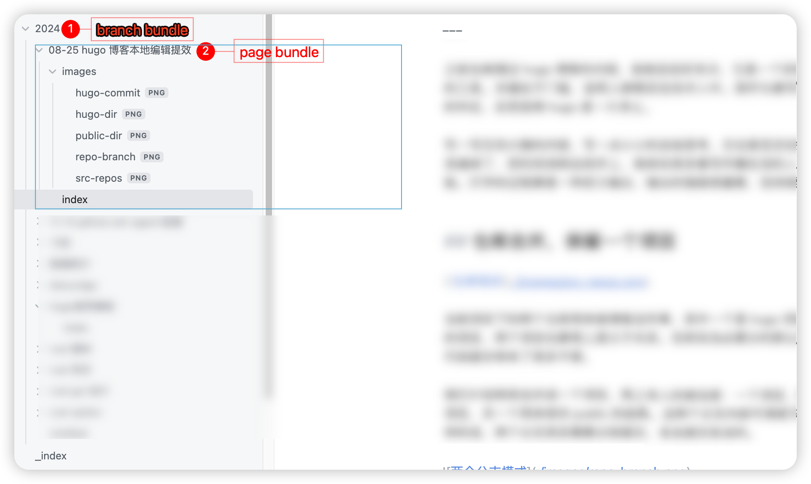

hugo 博客本地编辑提效
Posted by 付辉 on Saturday, August 24, 2024 共1382字之前也梳理过 hugo 博客的内容，前前后后好多次，它是一个好的编辑工具，但也不是一个特别好的工具。关键在于门槛，适用人群限定在技术人中。我作为靠写写代码赚生活的人，在马上奔 34 的年纪，反而觉得 hugo 是一片净土。
写一写无伤大雅的内容，写一点小小的总结思考，无论是否还会重读这篇内容，过程的时间确实是消遣掉了，把时间消耗在码字上，就类似很多靠写作赚生活的人一样，也应该算是一种不同的体验。打字的过程算是一种武力输出，输出的强弱很重要，但持续其实更重要。
仓库合并，保留一个项目

当前项目下的两个仓库用来做博客这件事，其中一个是 hugo 项目，另一个就是服务 github page 的项目，两个项目也算得上是父子关系。但其实没必要分的那么清楚，分成两个项目只是徒劳地给代码提交带来了很多不便。
我们计划将其合并成一个项目，网上有人的做法是：一个项目，两个分支。其中一个用来保存hugo项目，另一个用来保存 public 的结果。这两个分支内容可谓是天差地别，不过也没有那么重要。这样的话，两个分支其实需要分别提交，各自提交各自的。

聪明的你应该已经想到，hugo 项目最终的产出其实是项目下的 public 目录，我们直接用 public 作为仓库，将 hugo 项目作为 public 的一个子目录，hugo 每次编译的时候将产出路径指定为当前目录的父目录。
我其实也是这么想的，但这种方法行不通。文件的变更确确实实生效了，但是访问博客的时候却访问不到新编译的变更。这很奇怪，但是也不知道其中原理。即使我将目录指定为隐藏目录，也依旧不行。希望理解原理的人能给指导一下。

折腾了半天，姑且不考虑效果，我总结这几种方式没有优劣之分，效率提升上基本毫无差别，主要还是看个人的喜好，最终我计划使用第二种模式：一个项目，两个分支。
两个分支之间的交互
因为这两个分支的内容是完全不相同的，现在将仓库存储在两个不同的目录，两个目录之前有代码生成关系，真正起作用的其实就是一个 hugo 命令，这个命令的作用是编译项目，将生成的文件发布到 publish 目录中。

可以通过命令实现如上图所示的生成操作，但每次单独在命令行执行其实是一种重复劳动，即使现在的命令行都有记忆的能力，这样执行的次数多了也会让人很不耐烦。最好的方式其实是本地执行 hugo server 时，自动将变更的代码同步到 public 项目。
hugo 支持了一个属性 publishDir，它指定一个目录的路径，最终 hugo 的产出都会输出到这个目录下。在配置这个属性之后，操作方式上其实是有简化的，虽然非常有限！之前我们需要执行 hugo -d public_path，而现在只需要执行 hugo 或者 hugo server 命令就可以。
代码提交
代码提交也属于流程上的工作，两个分支都需要做流程化的 add commit push 操作，重复性的劳动其实很没有必要，而这其实可以通过一个简单的 shell 脚本来统一处理。我现在使用的 warp 做命令行工具，它本身提供了 workflow 的管理，我在这里创建一个：

总体来说，博客整体流程上没有什么问题。这个操作的提效要明显优于之前的操作。
使用博客模板
说到博客模板，拿这篇文章来说明，文章需要插入图片，而图片资源就需要有明确的地址，可以将图片放到 hugo 静态资源文件中，但文章其实是使用了 Page bundles 下的 leaf bundle 模式来处理。
leaf bundle 本质上表示一个page页，hugo中的一篇博客，内部包含文件名index.md以及其它图片资源，而index.md中加载资源图片可以使用相对路径进行引用。我用这篇博客来解释一下（马赛克并非是出于隐私，目的是为了图片突出重点）

只有先解释清楚了 leaf bundle ，接下来就说明下博客模板。